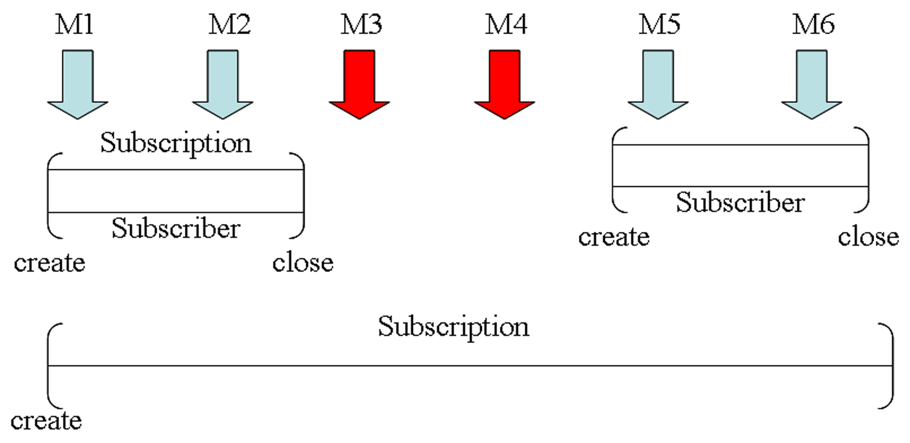
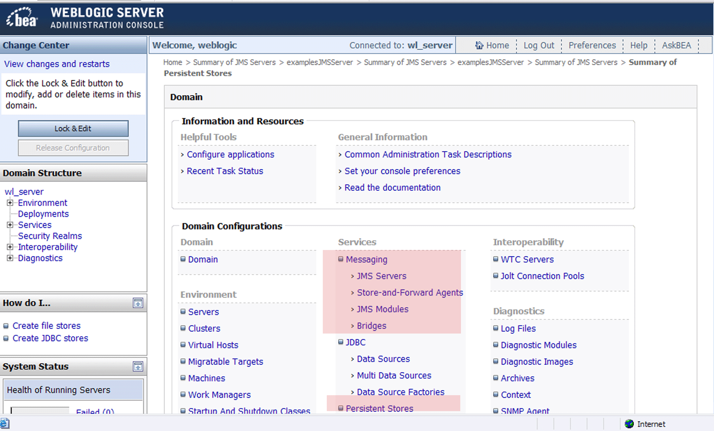
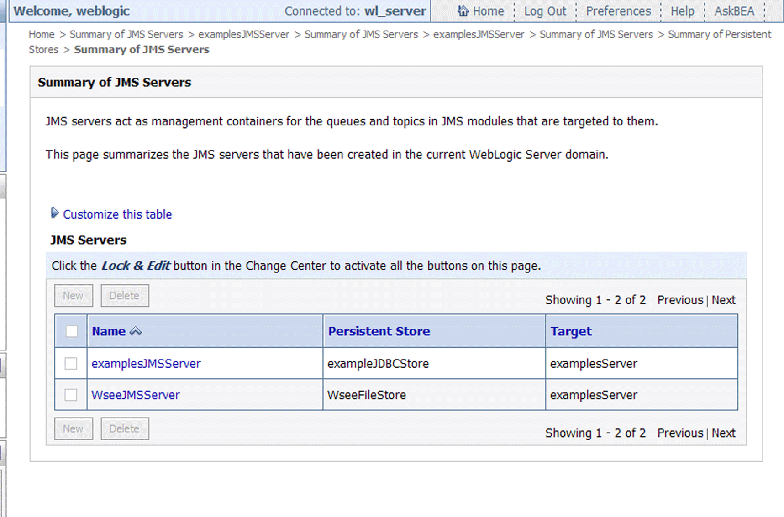
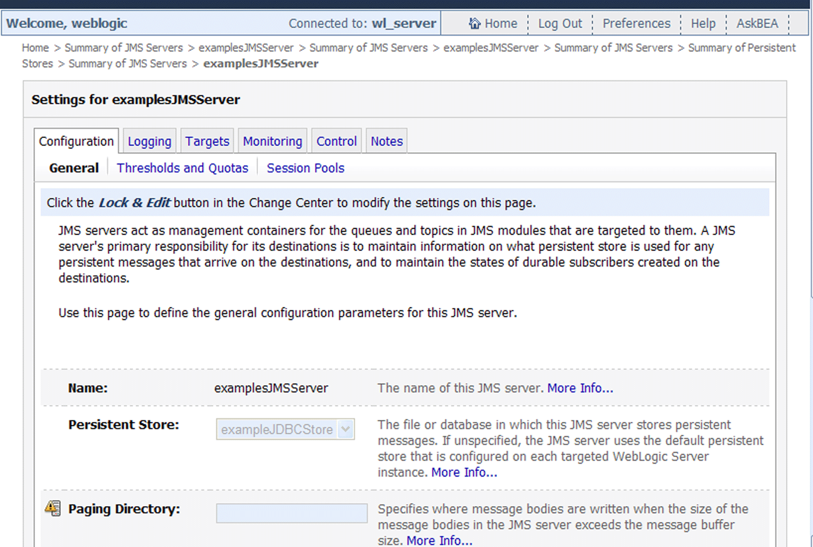

JMS (Java Message Service) (2)
Durable Subscribers
Para estar seguro de que una aplicación Pub/sub recibe todos los mensajes publicados, debe usarse el modo de reparto PERSISTENT en la construcción del mensaje. Pero adicionalmente, se en este caso puede usarse un durable subscriber para los subscriptores. La idea básica de esto es que una subscripción de este tipo permanezca activa a pesar de que el subscriptor cierre su conexión:

Para trabajar con este tipo de subscripciones hay que realizar los siguientes pasos:
1. Si no existe ya un Persistent Store entonces hay que definirlo. Para ello antes hay que haber creado un servidor JMS al que se van a vincular los recursos (ya lo veremos más adelante). En el servidor de ejemplos ya existe examplesJMSServer y está configurado de tal forma que su almacén persistente se llama exampleJDBCStore:



2. Inmediatamente después de tener la conexión creada, establecer el identificador de cliente con una llamada a setClientID (también existe el get correspondiente):
topicConnection =
topicConnectionFactory.createTopicConnection();
topicConnection.setClientID("sco");
3. Después se llama al método createDurableSubscriber:
String nombre = "mySub";
TopicSubscriber topicSubscriber =
createDurableSubscriber(mytopic, nombre);
4. Más tarde podríamos cerrar el TopicSubscriber:
topicSubscriber.close();
5. El proveedor JMS almacena los mensajes publicados en el tópico (al igual que haría con una cola) en el almacén persistente, de forma que si el programa u otra aplicación llama a createDurableSubscriber con la misma factoría de conexión y el mismo identificador de cliente (que no tiene por que ser un nombre de usuario) y al mismo tópico, entonces la subscripción se reactiva y el proveedor JMS reparte los mensajes que tenía guardado en el almacén.
Browser de Mensajes
En el tema anterior vimos como recibir mensajes de una cola, pero supongamos que solo queremos consultar la cola. Esto se puede hacer reemplazando los objetos QueueReceiver con objetos QueueBrowswer. En el método init() del ejemplo QueueBrowse.java se crea uno de estos objetos:
qbrowser = qsession.createBrowser(queue);
En el método displayQueue() se muestra como consultar la cola. En primer lugar se obtiene un Enumeration con los mensajes:
Enumeration e = qbrowser.getEnumeration();
A partir de aquí se itera obteniendo las propiedades del mensaje, tales como la prioridad, el identificador, etc...
...
if (! e.hasMoreElements()) {
System.out.println("There are no messages on this queue.");
} else {
System.out.println("Queued JMS Messages: ");
while (e.hasMoreElements()) {
m = (Message) e.nextElement();
System.out.println("Message ID " + m.getJMSMessageID() +
" delivered " + new Date(m.getJMSTimestamp()) +
" to " + m.getJMSDestination());
System.out.print("\tExpires ");
if (m.getJMSExpiration() > 0) {
System.out.println( new Date( m.getJMSExpiration()));
}
else
System.out.println("never");
System.out.println("\tPriority " + m.getJMSPriority());
System.out.println("\tMode " + (
m.getJMSDeliveryMode() == DeliveryMode.PERSISTENT ?
"PERSISTENT" : "NON_PERSISTENT"));
System.out.println("\tCorrelation ID " + m.getJMSCorrelationID());
System.out.println("\tReply to " + m.getJMSReplyTo());
System.out.println("\tMessage type " + m.getJMSType());
if (m instanceof TextMessage) {
System.out.println("\tTextMessage \"" + ((TextMessage)m).getText() + "\"");
}
}
}
Estos métodos getXXXX tienen sus contrapartidas setXXXX. De todas maneras estas propiedades se establecen en el momento en que enviamos un mensaje.
Interacción de servlets con JMS
La interación de un servlet con el sistema JMS sigue los siguientes pasos como puede verse en el método service del ejemplo SenderServlet.java:
1. Definir variables para construir los mensajes.
2. Construir la web para recoger los parametros.
3. Llamar a los métodos de envío de un mensaje a un tópico o una cola.
public void service(HttpServletRequest req, HttpServletResponse res)
throws IOException, ServletException
{
res.setContentType("text/html");
res.setHeader("Pragma", "no-cache");
PrintWriter pw = res.getWriter();
boolean persistent;
String topicMsg="";
int priority;
long ttl;
String correlate;
String replyto;
String msgText="";
try {
if (req.getMethod().equals("GET")) {
printForm(pw);
} else {
topicMsg =
req.getParameterValues("dest")[0];
persistent =
req.getParameterValues("persistent")[0].equals("persistent");
priority =
Integer.parseInt(req.getParameterValues("priority")[0]);
ttl =
Long.parseLong(req.getParameterValues("timetolive")[0]);
correlate =
req.getParameterValues("correlate")[0];
replyto =
req.getParameterValues("replyto")[0];
msgText =
req.getParameterValues("msgtext")[0];
if (topicMsg.equals("topic"))
sendTopicMessage(persistent, priority, ttl, correlate, replyto, msgText);
else
sendQueueMessage(persistent, priority, ttl, correlate, replyto, msgText);
pw.println(ExampleUtils.returnHtmlHeader("JMS Message Status"));
pw.println("<h4><FONT COLOR=#DB1260 FACE=\"Helvetica\">");
pw.println("Message Status</FONT></h4>");
pw.println("Message Submitted: "+ExampleUtils.encodeXSS(msgText));
}
}
catch (Exception ex) {
ex.printStackTrace(new PrintWriter(pw));
ex.printStackTrace();
}
finally {
pw.println(ExampleUtils.returnHtmlFooter());
}
Transacciones en JMS (con JTA)
El objetivo de las transacciones en este contexto es tratar un grupo de mensajes que se producen o consumen como una unidad atómica. Esto implica que en el momento en que una aplicacion realiza el commit de una transacción, todos los mensajes que recibió durante esta transacción se borran del sistema de mensajes y todos los que envió son distribuidos.
Por el contrario, si se realiza un rollback los mensajes recibidos son devueltos al sistema de mensajes y los que envió son descartados. Si un suscriptor de tópicos hace un rollback de un mensaje éste se re-envía al tópico. Cuando un receptor de mensajes PTP hace el rollback el mensaje se re-envía a la cola para que otro consumidor lo pueda recibir.
Como ejemplo básico de uso de transacciones, veamos como conectarse a un cliente PTP transaccional. El ejemplo Weblogic se denomina QueueReceiveInTx.java y su método central es receiveMessages():
public void receiveMessages() throws Exception {
Message msg = null;
String msgText = "";
try {
// Set transaction timeout to 30 minutes.
utx.setTransactionTimeout(1800);
utx.begin();
System.out.println("TRANSACTION BEGUN");
do {
msg = qreceiver.receive();
if (msg != null) {
if (msg instanceof TextMessage) {
msgText = ((TextMessage)msg).getText();
} else {
msgText = msg.toString();
}
System.out.println("Message Received: "+ msgText );
if (msgText.equalsIgnoreCase("quit")) {
utx.commit();
System.out.println("TRANSACTION COMMITTED");
}
}
} while(msg != null && ! msgText.equalsIgnoreCase("quit"));
} catch (JMSException jmse) {
System.out.println("Error receiving JMS message: "+jmse);
System.err.println("An exception occurred: "+jmse.getMessage());
throw jmse;
} catch (javax.transaction.NotSupportedException nse) {
System.out.println("TRANSACTION COULD NOT BEGIN DUE TO: "+ nse);
throw nse;
} catch (javax.transaction.RollbackException rbe) {
System.out.println("TRANSACTION ROLLED BACK DUE TO: "+rbe);
throw rbe;
} catch (javax.transaction.HeuristicRollbackException hre) {
System.out.println("TRANSACTION ROLLED BACK DUE TO: "+hre);
throw hre;
} catch (javax.transaction.HeuristicMixedException hme) {
System.out.println("TRANSACTION ROLLED BACK DUE TO: "+hme);
throw hme;
} catch (javax.transaction.SystemException se) {
System.out.println("TRANSACTION EXCEPTION: "+se);
throw se;
}
}
1.- Se ha declarado un objeto javax.transaction.UserTransaction llamado utx.
2.- Se establece el timeout de la transaccion (30 minutos).
3.- Se inicia la transacción con utx.begin().
4.- Bucle hasta recibir el mensaje quit.
5.- La transacción se completa (utx.commit) o bien es abortada por diversos motivos.
Otra forma, quizás más directa, de usar transacciones en JMS es crear una sesión transaccional, lo cual implica poner un flag a verdadero en el momento en que creamos la sesión. Tomando como referencia el ejemplo JMSDrawDemo.java, que iremos detallando durante esta sección, en el método initJMS() que es donde se inicia el contexto, se crea la sesión no-transaccional y otra transaccional, en un esquema Pub/sub:
... session = connection.createTopicSession(false, Session.AUTO_ACKNOWLEDGE); sessionTX = connection.createTopicSession(true, Session.AUTO_ACKNOWLEDGE); ...
donde session y sessionTX son objetos TopicSession. A partir de este punto los TopicPublisher que se creeen serán no-transaccionales o transaccionales en función de si se crean a partir de una sesión no-transaccional o transaccional:
topic = (Topic) ctx.lookup(TOPIC); publisher = session.createPublisher(topic); publisherTX = sessionTX.createPublisher(topic);
En lo que respecta al objeto TopicSubscriber llamado subscriber no haremos tal distinción y solamente nos interesa especificar si es de tipo durable o no. En el primer caso JMS almacena el mensaje en un medio persistente (como una BD) hasta asegurarse de que ha sido entregado o ha expirado, incluso si el suscriptor no estaba activo en el momento en que se envió el mensaje. A continuación se registra el oyente, se crea un mensaje y se inicia la conexión:
if (durableSubscriberID == null) {
subscriber = session.createSubscriber(topic, "TRUE", noLocal);
} else {
subscriber = session.createDurableSubscriber(topic, durableSubscriberID);
}
subscriber.setMessageListener(this);
msg = session.createMessage();
connection.start();
Esta aplicación ejemplo se lanza desde dos clientes (ver instrucciones HTML en el directorio de ejemplos de JMS). Cada cliente crea un panel en donde se puede seleccionar si la sesión va a ser transaccional o no y después puede pinchar para añadir iconos. Cada icono se traduce en un mensaje que se publica. Esto se hace en el método publishPoint que recibe como argumento las coordenadas donde hemos pinchado con el ratón. A partir de estas coordenadas construye un mensaje y almacena todos los puntos enviados en el vector pointsSent:
private void publishPoint(int x, int y)
{
try {
msg.setIntProperty("x", x);
msg.setIntProperty("y", y);
pointsSent.addElement(new Point(x, y));
if (isTransacted) {
publisherTX.publish(msg, deliveryMode(), 5, 0);
} else {
publisher.publish(msg, deliveryMode(), 5, 0);
}
} catch (JMSException jmse) {
jmse.printStackTrace();
}
}
El mensaje es publicado de forma transaccional o no según el caso. El método setIntProperty() establece un campo de propiedad (property field).
Una vez publicado, el suscriptor lo recibe a través del método onMessage() que obtiene con getIntProperty() los enteros y pinta una imagen de una furgoneta (caso no-transaccional) o un asterisco (caso transaccional):
public void onMessage(Message msg)
{
try {
String command = msg.getStringProperty("command");
if (command != null && command.equals("clearScreen")) {
clearScreen();
} else {
int x = msg.getIntProperty("x");
int y = msg.getIntProperty("y");
Point p = new Point(x,y);
updateImage(p);
}
} catch (JMSException e) {
e.printStackTrace();
}
}
En el panel de cada cliente hay un botón para hacer commit y otro para hacer rollback. Con ellos se llama respectivamente a los métodos doCommit() y doRollback() desde los que se invocan a los métodos commit() y rollback() de la sesión:
private void doCommit()
{
try {
sessionTX.commit();
commitButton.setEnabled(false);
rollbackButton.setEnabled(false);
repaint();
} catch (JMSException jmse) {
jmse.printStackTrace();
}
}
private void doRollback()
{
try {
sessionTX.rollback();
pointsSent.removeAllElements();
commitButton.setEnabled(false);
rollbackButton.setEnabled(false);
offScreenImage = null;
repaint();
} catch (JMSException jmse) {
jmse.printStackTrace();
}
}
En una sesión transaccional, los asteriscos no se pintan hasta que se hace commit y se borran del panel si se decide hacer rollback.
NOTA: Algunos de los ejemplos presentados en esta sesión existen solo en la versión 7.0 del BEA WebLogic. Estos ejemplos se encuentran en ejemplosWL700.tar.gz